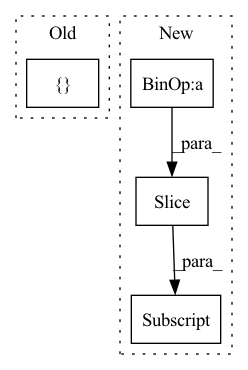

Pattern ID :3454
Before Change
x = input
stacked = []
output = []
stacked.append(input)
for idx in range(self.depth):After Change
x_residual = x_residual + x
in_channels = growth_rate[idx]
stacked_channels = sum(growth_rate[idx+1:] )
sections = [in_channels, stacked_channels]
if idx != depth - 1:In pattern: SUPERPATTERN
Frequency: 3
Non-data size: 4
Instances Fragment ID: 17548723
Project Name: tky823/dnn-based_source_separation
Commit Name: 8fb5cd5f4f8b4a435d058aef6204904f657abea0
Time: 2021-06-06
Author: 40362510+tky823@users.noreply.github.com
File Name: src/models/d2net.py
M Class Name: D2Block
N Class Name: D2Block
M Method Name: forward(2)
N Method Name: forward(2)
M Parent Class: nn.Module
N Parent Class: nn.Module
M File Name: src/models/d2net.py
N File Name: src/models/d2net.py
M Start Line: 51
M End Line: 62
N Start Line: 51
N End Line: 67
Before Change
or (batch_size, num_blocks*growth_rate, n_bins, n_frames)
x = input
stacked = []
stacked.append(input)
for idx in range(self.num_blocks):After Change
x_residual = x_residual + x
in_channels = growth_rate[idx]
stacked_channels = sum(growth_rate[idx+1:] )
sections = [in_channels, stacked_channels]
if idx != num_blocks - 1: Fragment ID: 17548722
Project Name: tky823/dnn-based_source_separation
Commit Name: 8fb5cd5f4f8b4a435d058aef6204904f657abea0
Time: 2021-06-06
Author: 40362510+tky823@users.noreply.github.com
File Name: src/models/d3net.py
M Class Name: D3Block
N Class Name: D3Block
M Method Name: forward(2)
N Method Name: forward(2)
M Parent Class: nn.Module
N Parent Class: nn.Module
M File Name: src/models/d3net.py
N File Name: src/models/d3net.py
M Start Line: 357
M End Line: 367
N Start Line: 414
N End Line: 430
Before Change
attn = softmax(dots, dim=-1)
self.save_attn({ "attn": attn, "v": v} )
out = torch.einsum("b h i j, b h j d -> b h i d", attn, v)
out = rearrange(out, "b h n d -> b n (h d)")After Change
if exists(self.static_mask):
dots.masked_fill_(
~self.static_mask[offset : offset + n, : offset + n] , mask_value
)
attn = softmax(dots, dim=-1) Fragment ID: 17548724
Project Name: bohuanglab/protein-localization-transformer
Commit Name: e66767bf380cd9963aca64135339e98395c46a5c
Time: 2022-05-23
Author: 42391631+EmaadKhwaja@users.noreply.github.com
File Name: celle/attention.py
M Class Name: Attention
N Class Name: Attention
M Method Name: forward(6)
N Method Name: forward(4)
M Parent Class: nn.Module
N Parent Class: nn.Module
M File Name: celle/attention.py
N File Name: celle/attention.py
M Start Line: 73
M End Line: 92
N Start Line: 73
N End Line: 116